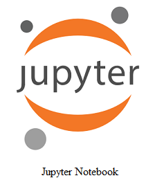
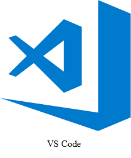

R语言编程与心理统计
2022-04-08
Chapter 1 R编程环境的搭建
1.1 R是啥？
R既是一种自由的编程语言，同时也是一款软件开发环境，主要用于统计分析、绘图、以及数据挖掘。R本来由新西兰奥克兰大学的统计学家罗斯·伊哈卡（Ross Ihaka）和罗伯特·杰特曼（Robert Gentleman）开发，现由R开发核心团队负责开发。两位统计学家的名字的首字母都是R，R语言由此得名。同时，R语言是和之前的S语言一脉相承的。通常S语言的代码不作修改，就可在R的开发环境中运行。R可以运行于多种操作系统平台，如Windows操作系统、苹果OS、以及UNIX（包括LINUX）。
R作为一种编程语言内置多种统计学及数字分析的函数或功能。R的功能可以通过安装软件包（packages）的方式进行扩展和增强。因此，在R语言中，我们可以找到几乎所有常用的统计分析方法（只有你想不到的，没有R办不到的）。同时，R还是一种面向对象\(^*\)的编程语言。
\(^*\)面向对象：一种编程范式，一种对现实世界理解和抽象的方法，是计算机编程技术发展到一定阶段后的产物。相对于面向过程来讲，它将数据和函数或方法组织为一个整体或对象，例如，自行车有两个轮子、车把、脚蹬子等，这些是数据；它可以用于骑行、载人或者物，这些是方法或函数。我们编程时可以把这些数据和方法组织成一个自行车类。在实现时，可以具体化为一个自行车的对象。
R的绘图功能可以将数据以及统计分析的结果可视化地呈现出来。结合Latex和HTML技术，R还可以将文字、数学符号、表格、图像、和代码混合编辑在一起，并且通过排版最终生成网页、Word文档、PDF文档，甚至是电子书（bookdown）等。另外，R还用于可以开发个人博客（blogdown）。
在数据挖掘方面，R除了可以做统计建模和可视化之外，还可用于获取数据。R可以编写网络爬虫用于获取网络上的数据，也可以通过网站的接口（API）来获取网站里的信息以及网站用户信息等。例如，Rweibo是一个新浪微博的R语言包，它可以对新浪微博提供的接口进行了实现（见新浪微博API），可以进行微博信息获取、用户信息获取、搜索、发表微博等操作。
R作为自由的编程语言是是GNU计划中的一个项目计划中的一个项目，它允许其源代码自由下载使用。也就是说，软件开发者可以将统计分析的方法编写成一个软件包（packages）供我们自由地下载安装使用。我们自己也可以写一些统计分析或者数据整理的软件包分享给别人使用。据统计，R的CRAN里有一万多个包。
作为统计分析工具，R可以用于许多学科领域的研究，如用于人文社会科学（包括心理学）、计量经济学、财经分析、生物统计、以及人工智能等。
1.2 R编程环境：R语言在哪儿写程序？
1.2.1 第一步：先装上R
工欲善其事，必先利其器。首先，我们来安装R。我们可以通过搜索引擎搜索R并进入到官网，来下载R。当然，我们也可以直接点这个链接
到R的镜像列表，然后，选择一个镜像下载R。通常，我们会选择离我们近的镜像（例如，中国境内的镜像），因为这样下载速度比较快。当然，以现在的网速，我们可以选择任意的镜像进行下载。
这里我选择0-Cloud的R镜像：
点击上面这个链接，转到R的下载页面。我们可以选择适合我们的计算机的操作系统的版本来下载R。
下载完成之后，双击安装包，或者鼠标右键打开，就可以安装R。
R的安装包是包含了R语言及其编程环境RGUI。所以，安装完之后，点击我们的计算机上的“开始”菜单，搜索R，会看到以下图标：
鼠标单击这个图标，就打开了R的GUI（图形化用户界面）。
1.2.2 RGUI都可以干啥？
简单地说，RGUI是R语言自带的编程环境。在RGUI最上面的白色框是R的控制台，它可以像命令行一样工作。我们在红色“大于号”那里可以输入命令，函数、或者代码块。输入命令之后，按键盘上的“回车”键，命令就执行了。例如，在控制台输入print(123)，然后按键盘上的“回车”键，打印的结果就出现在下方了（如下图）。
如果想编写大段的程序，我们可以用“New Script”功能，打开R的编辑器（R Editor）。我们可以看到在R编辑器的窗口上沿的“R Editor”左边有“Untitled”字样，这表示我们编辑的文件尚未保存。在R编辑器中写代码时，可以先按“Ctrl+S”或者“File”菜单下的“Save”功能来保存文档。另外，在编写代码时，也要在常常按“Ctrl+S”保存已经写的代码，以防写好的代码未保存。
文档保存之后，我们可以在R编辑器上沿看到文档的路径和名字，如“C:\Users\Shi\Documents\test.R”。
最后，我们来了解一下安装和加载R的软件包（package）的方法。如前所述，R的packages里包含了我们做统计分析或者数据可视化的数据和函数等。如果读到这里，您还不清楚R的packages到底是啥，是如何使用的，不要紧，后边我们会经常提到它。这里提到它只是为了让大家了解一下RGUI的“Packages”菜单下安装和加载packages的功能。
如上图中，我们可以点击“Packages”下拉菜单中的“Install Packages”来将R的packages安装到我们计算机上的R库中，以备使用其中的统计分析方法和数据。如果您是第一次安装packages，R会首先让您选择CRAN镜像（这里的镜像和下载R的镜像是一样的），也就是从哪里下载packages。
选择好镜像后，Packages的列表就会弹出来。列表中的package是按字母表的顺序排列的（见图1.8）。从列表中选择我们需要的package，点击下边的“OK”按钮就可以安装它了。
如果我们知道package的名字，还有更简单的方法来安装它。我们可以在R控制台（R Console）中输入install.packages(“您要安装的package”)，然后“回车”即可。
install.packages("您要安装的package")我们要使用package中的功能，首先要加载它到R的工作环境中。加载packages到R中，也有两种方法，一种是点击“Packages”的下拉菜单中的“Load Package”（见图1.7）。
另一种方法是在R控制台（R Console）中输入library(“您要加载的package”)，然后“回车”即可。
library("您要加载的package")从上边我们可以看到RGUI的功能比较少，界面比较不符合审美，而且相对来说比较难用。一般使用R做统计分析或者其他操作时，我们用一款更易用，功能更加多的IDE（集成开发环境）叫做R Studio。下面，我们来了解一下R Studio。
1.2.3 更好的选择：RStudio
R Studio是R语言集成开发环境。所谓的集成是说它将与R编程相关的所有功能都集成在同一个软件中。这提升了便利性，同时也使得我们需要花更多的时间熟悉这个开发环境。所幸的是，在心理学研究进行统计分析时，我们不需要用到R Studio的所有功能，而只需要用到其基本功能。随着编程能力和相关知识的提升，大家可自行探索R Studio更多的功能。
以下是下载R Studio的网址：我们要下载安装R Studio的桌面版（R Studio Desktop），而不是服务器版（R Studio Server）。R Studio的桌面版（R Studio Desktop）又分为开源版（Open Source Edition）和专业版（R Studio Desktop Pro）。开源版是免费的，已经满足我们的需求了。
记住，先安装R，再安装R Studio。
图1.11显示的是R Studio的主界面。它被切分成四个窗口，这四个窗口的位置和大小是可以可以根据我们的使用习惯任意调整和关闭的。图1.11中的四个窗口的位置是按照作者的习惯进行调整后的样子。
左上角的窗口是R的编辑器，对应RGUI中的编辑器。不同的是，它比RGUI中的编辑器增加了多个功能，例如，保存（Save Current Document）、运行（Run）等功能。在R Studio编辑器中，R的代码可以一行一行地运行（Run），也可以选中一个代码块或者多行代码运行（Run）。运行代码时，可以点编辑器上方的“Run”按钮，也可以按键盘上的“Ctrl+Enter”键。
右上角的窗口对应RGUI的控制台（Console）窗口，可以执行一行代码或者一个代码块。运行编辑器中的代码时，运行的代码和结果也会出现在控制台（Console）中。此外，这个窗口中还有另外两个选项卡“Terminal”和“Job”。它们是两个窗口，其功能基本上用不到，暂不作介绍。
左下角的窗口包含多个选项卡，如“Environment”、“History”、“Connections”、“Build”、“Git”、和“Tutorial”，是我们在RGUI中所没有见到过的。其中，“Environment”用于显示我们加载到R Studio中的数据。“History”用于显示历史代码，也就是我们运行过的代码。“Connections”用于导入存储在网络或者数据库中的数据。“Build”通常用于测试R代码中的bug（错误）。“Git”用于将代码上传到基于Git的代码托管和研发协作平台，如Gitee。在“Tutorial”中，可以 找到学习R或者RStudio的资源。
右下角的窗口也包含多个选项卡。“Files”中显示的是当前工作路径中的文件及文件夹，方便我们在R Studio中工作时与我们的计算机进行交互（如，查看文件）。“Plots”用于呈现统计分析时生成的图像。“Packages”中列出了R库中已经安装的软件包，并可以安装和更新软件包。“Help”用于搜索帮助文档，例如，我们想要知道某一个函数的功能，可以在它的搜索框中进行搜索。
当然，R Studio还有很多其他的功能，我们以后在学习过程中可以慢慢探索。
1.2.4 还有其他的R的开发环境吗？
答案是“当然有！”例如，Anaconda中的Jupyter Notebook和JupyterLab，以及Visual Studio Code等。但是，最好用的还是R Studio。
 
好了，现在我们已经搭建好R的编程环境了。接下来，我们正式来学习如何使用R语言编程以及如何使用它进行统计分析。